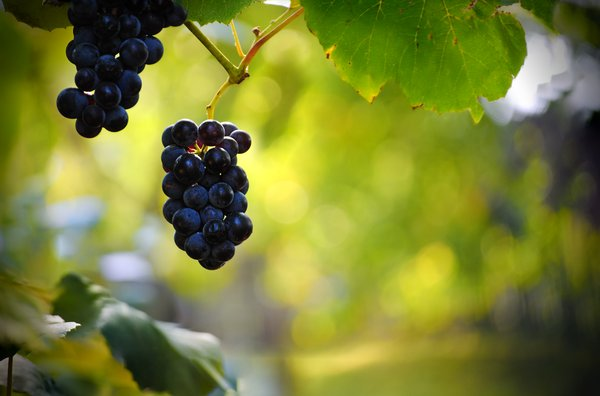

Viticultura
În anul 2001, producția de struguri a fost de 953.981 de tone, media la hectar fiind de 6.000 de kilograme. În anul 2008, producția de vin din România a fost de aproximativ 6,3 milioane de hectolitri de vin, în condițiile în care media producției din ultimii ani a fost de 5,5 milioane de hectolitri de vin.
Totuși, din această cantitate, doar 1,5 milioane de hectolitri provin din piața organizată a vinului, restul fiind realizat pentru așa-zisa piață de autoconsum (din care fac parte vinul îmbuteliat în PET-uri de ocazie și scos la vânzare  de către micii producători fie pe marginea șoșelei, fie pe tarabele piețelor sau în „vinăria” de la colțul blocului).
Valoarea totală a producției anuale este de aproximativ 500 de milioane de euro, din care pieței neorganizate îi revin peste 300 de milioane de euro, ceea ce duce la pierderi de 100 milioane euro pentru statul român, datorită neimpozitării (anul 2009). Industria vinului asigură locuri de muncă pentru 50.000 de oameni, iar alte 500.000 de persoane își asigură traiul din viticultură și vinificație.
În prezent, în România, dintr-un total de 186,9 mii de hectare de plantații de vie, 94,9 mii de hectare reprezintă plantațiile cu viță nobilă, restul suprafețelor fiind acoperite cu hibrid, acceptat doar pentru producerea vinului de masă.
În anul 2008, România a exportat o cantitate de aproximativ 385.000 hectolitri de vin pentru peste 35,5 milioane de euro, și a importat o cantitate de 140.000 hectolitri de vin, pentru o sumă de puțin peste 15,8 milioane de euro.
În Romania, la nivelul anului 2007, consumul de vin pe cap de locuitor era de aproximativ 22 de litri, în timp ce în Franța consumul anual pe cap de locuitor era de 57 de litri.